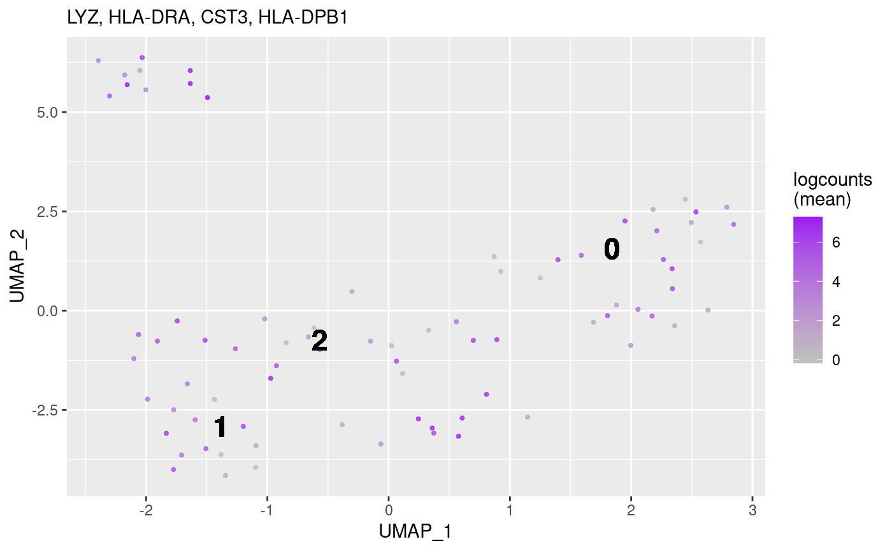
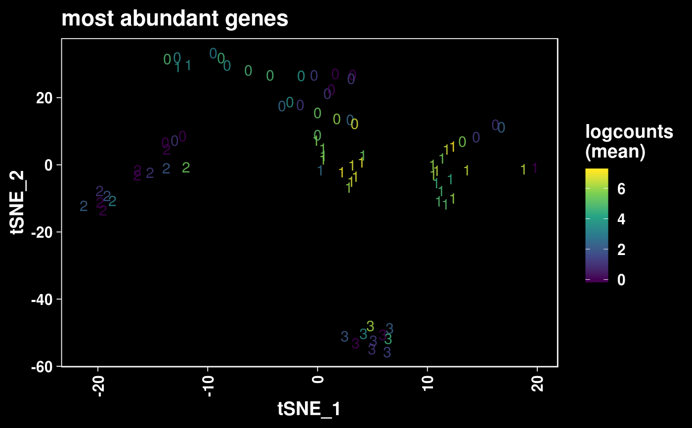

Visualize gene markers on a reduced dimension plot (e.g. t-SNE, UMAP).
# S4 method for SingleCellExperiment plotMarker(object, genes, reducedDim = "TSNE", expression = c("mean", "sum"), color = getOption("pointillism.continuous.color", ggplot2::scale_colour_gradient(low = "gray75", high = "purple")), pointSize = getOption("pointillism.pointSize", 0.75), pointAlpha = getOption("pointillism.pointAlpha", 0.85), pointsAsNumbers = getOption("pointillism.pointsAsNumbers", FALSE), label = getOption("pointillism.label", TRUE), labelSize = getOption("pointillism.labelSize", 6L), dark = getOption("pointillism.dark", FALSE), legend = getOption("pointillism.legend", TRUE), title = TRUE) # S4 method for seurat plotMarker(object, genes, reducedDim = "TSNE", expression = c("mean", "sum"), color = getOption("pointillism.continuous.color", ggplot2::scale_colour_gradient(low = "gray75", high = "purple")), pointSize = getOption("pointillism.pointSize", 0.75), pointAlpha = getOption("pointillism.pointAlpha", 0.85), pointsAsNumbers = getOption("pointillism.pointsAsNumbers", FALSE), label = getOption("pointillism.label", TRUE), labelSize = getOption("pointillism.labelSize", 6L), dark = getOption("pointillism.dark", FALSE), legend = getOption("pointillism.legend", TRUE), title = TRUE)
| object | Object. |
|---|---|
| genes |
|
| reducedDim |
|
| expression |
|
| color |
To set the discrete color palette globally, use: options(basejump.color.discrete = ggplot2::scale_color_viridis_d()) |
| pointSize |
|
| pointAlpha |
|
| pointsAsNumbers |
|
| label |
|
| labelSize |
|
| dark |
|
| legend |
|
| title |
|
Show graphical output. Invisibly return a ggplot list.
data(seurat_small) object <- seurat_small title <- "most abundant genes" genes <- counts(object) %>% Matrix::rowSums(.) %>% sort(decreasing = TRUE) %>% head(n = 4L) %>% names() str(genes)#> chr [1:4] "LYZ" "HLA-DRA" "CST3" "HLA-DPB1"## Default appearance. plotMarker(object, genes = genes[[1L]])## Dark mode with viridis palette. plotMarker( object = object, genes = genes, expression = "mean", pointsAsNumbers = TRUE, color = ggplot2::scale_color_viridis_c(), dark = TRUE, label = FALSE, title = title )